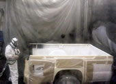

Isocyanates
 ShareCompartir
ShareCompartir

Overview
Isocyanates are a family of highly reactive, low molecular weight chemicals. They are widely used in the manufacture of flexible and rigid foams, fibers, coatings such as paints and varnishes, and elastomers, and are increasingly used in the automobile industry, autobody repair, and building insulation materials. Spray-on polyurethane products containing isocyanates have been developed for a wide range of retail, commercial, and industrial uses to protect cement, wood, fiberglass, steel and aluminum, including protective coatings for truck beds, trailers, boats, foundations, and decks.
Isocyanates are powerful irritants to the mucous membranes of the eyes and gastrointestinal and respiratory tracts. Direct skin contact can also cause marked inflammation. Isocyanates can also sensitize workers, making them subject to severe asthma attacks if they are exposed again. There is evidence that both respiratory and dermal exposures can lead to sensitization. Death from severe asthma in some sensitized subjects has been reported. Workers potentially exposed to isocyanates who experience persistent or recurring eye irritation, nasal congestion, dry or sore throat, cold-like symptoms, cough, shortness of breath, wheezing, or chest tightness should see a physician knowledgeable in work-related health problems.
Preventing exposure to isocyanates is a critical step in eliminating the health hazard. Engineering controls such as closed systems and ventilation should be the principal method for minimizing isocyanate exposure in the workplace. Other controls, such as worker isolation and use of personal protective equipment such as respirators and personal protective clothing to prevent dermal exposures may also be necessary. Early recognition of sensitization and prompt and strict elimination of exposures is essential to reduce the risk of long-term or permanent respiratory problems for workers who have become sensitized.
The most widely used compounds are diisocyanates, which contain two isocyanate groups, and polyisocyanates, which are usually derived from diisocyanates and may contain several isocyanate groups. The most commonly used diisocyanates include methylenebis(phenyl isocyanate) (MDI), toluene diisocyanate (TDI), and hexamethylene diisocyanate (HDI). Other common diisocyanates include naphthalene diisocyanate (NDI), methylene bis-cyclohexylisocyanate (HMDI)(hydrogenated MDI), and isophorone diisocyanate (IPDI). Examples of widely used polyisocyanates include HDI biuret and HDI isocyanurate.
Got Everything Covered?
NIOSH Publication No. 2008-109 (January 2008)
This poster provides helpful tips on protecting workers from the hazards of isocyanate exposure during spray-on truck bedliner applications.
NIOSHTIC-2 Search
NIOSHTIC-2 search results on Isocyanates
NIOSHTIC-2
is a searchable bibliographic database of occupational safety and health publications, documents, grant reports, and journal articles supported in whole or in part by NIOSH.
NIOSH Publications
Got Everything Covered?
NIOSH Publication No. 2008-109 (January 2008)
This poster provides helpful tips on protecting workers from the hazards of isocyanate exposure during spray-on truck bedliner applications.
Alert: Preventing Asthma and Death from MDI Exposure During Spray-on Truck Bed Liner and Related Applications
NIOSH Publication No. 2006-149 (September 2006)
This Alert summarizes four case reports: one death and several incidents of asthma or other respiratory disease following exposure to MDI during spray-on truck bed lining operations.
Issues Related to Occupational Exposure to Isocyanates, 1989 to 2002
NIOSH Publication No. 2004-116 (2004)
Collects the past 14 years of isocyanate-related Health Hazard Evaluations in a concise format for easy reference and examination.
Preventing Asthma and Death from Diisocyanate Exposure
NIOSH Publication No. 96-111 (1996)
This Alert summarizes seven case reports of disease and deaths following occupational exposure to diisocyanates, and provides recommendations for prevention of exposures.
En Español
Current Intelligence Bulletin 53 - Toluene Diisocyanate (TDI) and Toluenediamine (TDA) - Evidence of Carcinogenicity
NIOSH Publication No. 90-101 (1989)
This bulletin describes the results and implications of animal studies that show cancer is associated with exposure to commercial-grade TDI. It also presents the known human health effects of TDI and TDA, and suggests guidelines for minimizing occupational exposures.
Criteria for a Recommended Standard: Occupational Exposure to Diisocyanates
NIOSH Publication No. 78-215 (1978)
Presents recommendations for the standard, biologic exposure information, environmental data,work practice recommendations, more...
NIOSH Pocket Guide to Chemical Hazards
Exposure limits, Respirator Recommendations, First Aid, more...
The Pocket Guide is a source of general industrial hygiene information on several hundred chemicals/classes found in the work environment. Key data provided for each chemical/substance includes name (including synonyms/trade names), structure/formula, CAS/RTECS Numbers, DOT ID, conversion factors, exposure limits, IDLH, chemical and physical properties, measurement methods, personal protection, respirator recommendations, symptoms, and first aid.
- Hexamethylene diisocyanate (HDI) (CAS No. 822-06-0)
- Isophorone diisocyanate (IPDI) (CAS No. 4098-71-9)
- Methyl isocyanate (MIC) (CAS No. 624-83-9)
- Methylenebis(phenyl isocyanate)(MDI) (CAS No. 101-68-8)
- Naphthalene diisocyanate (NDI) (CAS No. 3173-72-6)
- Toluene-2,4-diisocyanate (TDI) (CAS No. 584-84-9)
Documentation for Immediately Dangerous to Life or Health Concentrations (IDLHs)
This publication documents the criteria and information sources that have been used by NIOSH to determine immediately dangerous to life or health concentrations (IDLHs).
- Methylisocyanate (MIC) (CAS No. 624-83-9)
- Methylenebis (phenyl isocyanate) (MDI) (CAS No. 101-68-8)
- Toluene-2,4-diisocyanate (TDI) (CAS No. 584-84-9)
NIOSH Analytical Methods & Sampling
NIOSH Manual of Analytical Methods (NMAM) (3rd Supplement)
NIOSH Publication No. 2003-154 (2003)
NMAM is a collection of methods for sampling and analysis of contaminants in workplace air, and in the blood and urine of workers who are occupationally exposed.
- Chapter K. Determination of Airborne Isocyanate Exposure [PDF - 114 KB]
- NIOSH Method 5525 - Isocyanates Total (MAP) [PDF - 242 KB]
- NIOSH Method 5522 - Isocyanates [PDF - 36 KB]
- NIOSH Method 5521 - Monomeric Isocyanates [PDF - 36 KB]
Health Hazard Evaluations
NIOSH conducts Health Hazard Evaluations (HHEs) to find out whether there are health hazards to employees caused by exposures or conditions in the workplace.
Some recent HHE reports related to isocyanates have been listed below. For a comprehensive listing of HHE reports please search the HHE Database .
- Health Hazard Evaluation Report, HETA 2009-0085-3107 , Consolidation Coal Company Blacksville, West Virginia
- Health Hazard Evaluation Report, HETA 2008-0241-3113 , Miami Township Fire and Rescue Yellow Springs, Ohio
- Health Hazard Evaluation Report HETA 2008-0058-3108 , Aduddell Restoration and Waterproofing, Inc. Arlington, Virginia
- Health Hazard Evaluation Report, HETA-2004-0349-2970 , Kewaunee Fabrications, LLC, Kewaunee, Wisconsin
- Health Hazard Evaluation Report, HETA-2004-0038-2966 , US Roofing Contractors, Philadelphia, PA
- Health Hazard Evaluation Report, HETA-99-0196-2860 , Future Aviation, Inc., Naples, Florida
- Health Hazard Evaluation Report, HETA-99-0122-2798 , Lockheed Martin Aeronautical Systems, Marietta, Georgia
- Health Hazard Evaluation Report, HETA 97-0084-2669 , Woodward Governor Company, Fort Collins, Colorado
- Health Hazard Evaluation Report, HETA 97-0138-2677 , Shindoni, Inc., Tesuque, New Mexico
- Health Hazard Evaluation Report, HETA-94-0265-2703 , J. L. Long Middle School, Dallas, Texas
- Health Hazard Evaluation Report, HETA-94-0312-2512 , Square D Company, Oshkosh, Wisconsin
- Health Hazard Evaluation Report, HETA-94-0124-2470 , Whirlpool, Corp., Evansville, Indiana
Governmental Resources
Isocyanates: Working Safely
The California Department of Public Health has produced a fact sheet and new
web page
to provide information on health hazards from isocyanates and ways to minimize workplace exposure. A variety of workers—especially in auto body repair, foam manufacturing, and some types of construction—are exposed to isocyanates, a component of many polyurethane systems. Breathing in isocyanates, or even getting these chemicals on skin, can cause or worsen asthma, a chronic disease.
Environmental Protection Agency (EPA) - Spray Polyurethane Foam (SPF)
Information is aimed at helping to ensure the safety of SPF applicators and building occupants where SPF is installed. It is also aimed at providing safety and scientific information to professionals in business, non-governmental organizations, academic institutions, and regulatory agencies.
OSHA Isocyanates
Provides information on applicable standards, examples of hazards and possible solutions, sampling and analysis methods, more...
Guide to Preventing Asthma and Death When Applying Spray-on Truck-bed Liners [PDF - 94 KB]
This Washington Department of Labor and Industries Alert provides information on the hazards associated with exposure to isocyanates while spraying on truck bed linings.
U.S. Environmental Protection Agency - Automotive Refinishing Partnership
Provides resources about health and environmental concerns associated with refinishing activities, including information on Diisocyanates and other chemicals.
The Institut de recherche Robert-Sauvé en santé et en sécurité du travail (IRSST), Quebec - Guide for the Safe Use of Isocyanates
Provides employers and workers with an understanding of the risks associated with isocyanates.
The Institut de recherche Robert-Sauvé en santé et en sécurité du travail (IRSST), Quebec - Polyurethane Foam Spraying - Good Practices Guide Provides information to construction workers concerning exposure issues with spray polyurethane foam insulation, including best practices to minimize exposures.
Non-Governmental Resources
American Chemistry Council (ACC) - Spray Polyurethane Foam (SPF) Health and Safety
American Chemistry Council’s
Center for the Polyurethanes Industry (CPI)
and the
Spray Polyurethane Foam Alliance (SPFA)
. This site provides information for the professional contractor and installer, the homeowner, and the do-it yourselfer including important product stewardship information about spray polyurethane foam insulation, including videos and workbooks.
IsoFacts: The American Chemistry Council Diisocyanates Panel Web Site
Provides health, safety, environmental and regulatory information on two important diisocyanates – toluene diisocyanate (TDI) and methylenebis(phenyl isocyanate) (MDI).
International Isocyanate Institute
Contains a description of the Institute and its activities, as well as information on Institute scientific studies.
Alliance for Polyurethanes Industry - Environmental Health and Safety
API promotes the sustainable growth of the polyurethane industry, in accordance with the principles of Responsible Care®, by identifying and managing issues that could impact the industry, in cooperation with user groups.
Walk the Talk Program - European Diisocyanate & Polyol Producers Association (ISOPA)
Walk the Talk is a programme developed by the members of ISOPA with the aim of improving safety, health and environmental standards across the European polyurethanes industry. The “Walk the Talk” programme focuses on the behavioural safety of everyone involved in the industry through an ongoing process of information exchange and dialogue.
Project SENSOR News Fall 2003: Fatal Work-Related Asthma [PDF - 238 KB]
Truck Bed Liners
Truck Bed Liner (TBL) Health and Safety site of the Center for the Polyurethanes Industry (CPI).
Occupational Health Clinics for Ontario Workers, Inc
Addresses causes, symptoms and prevention of occupational asthma including isocyanate exposures
Isocyanates and Health: Past, Present and Future
The focus of this international multidisciplinary conference held in April 2013 in Bethesda, Maryland, was to identify and discuss the latest knowledge and important issues on the health effects of isocyanates, including current best evidence about exposure monitoring, environmental controls and clinical management. The
plenary speakers presentations
were given by world renown experts in their respective fields.
Posters
presented at the conference provided important information on these areas of interest: 1)worker and consumer exposures, 2) environmental exposures and monitoring, 3) toxicology/ animal models/ biomarkers, 4) occupational health surveillance, 5) respiratory epidemiology/disease and 6) human cancer risk.
- Page last reviewed: April 23, 2014
- Page last updated: November 10, 2014
- Content source:
- National Institute for Occupational Safety and Health Division of Applied Research and Technology